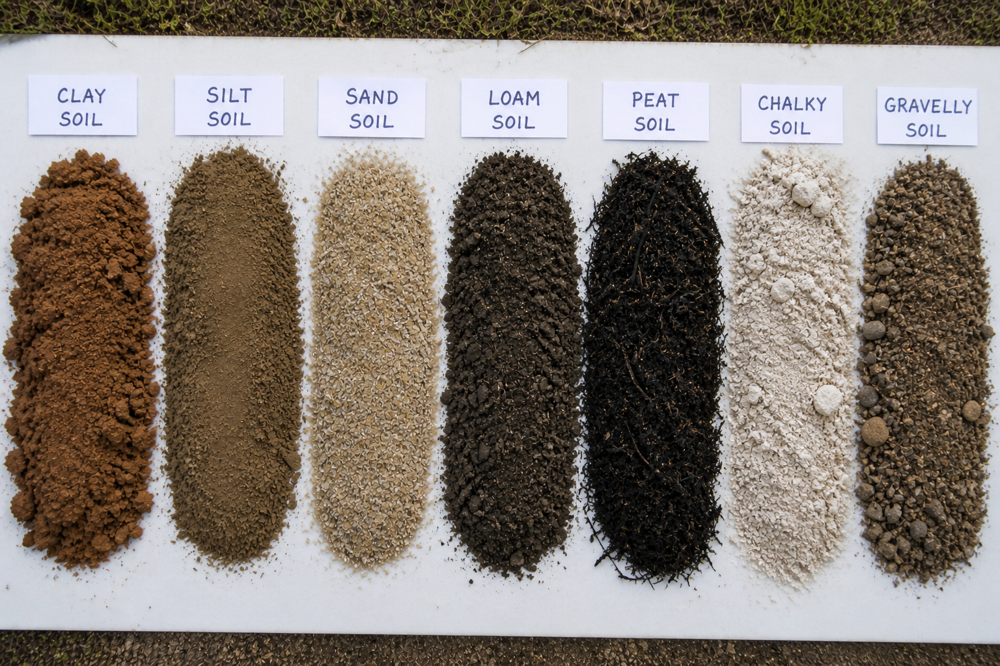
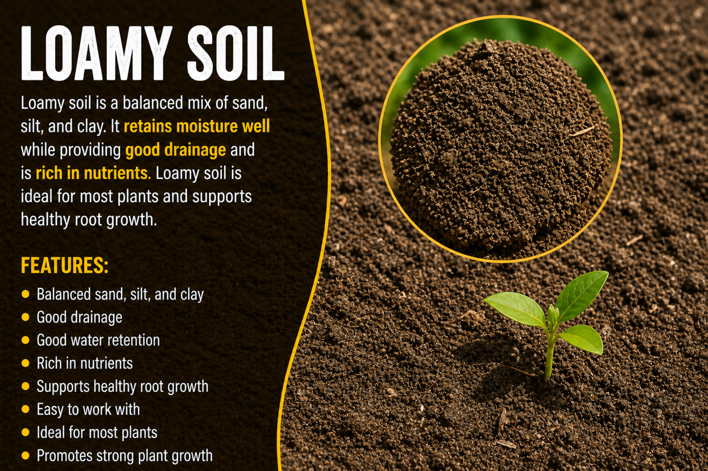
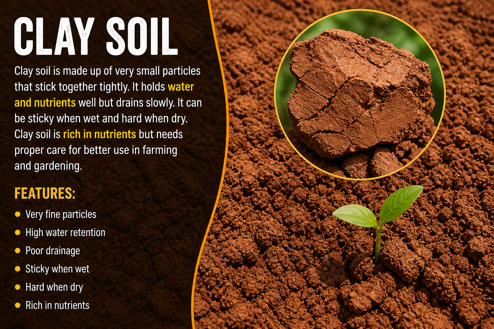
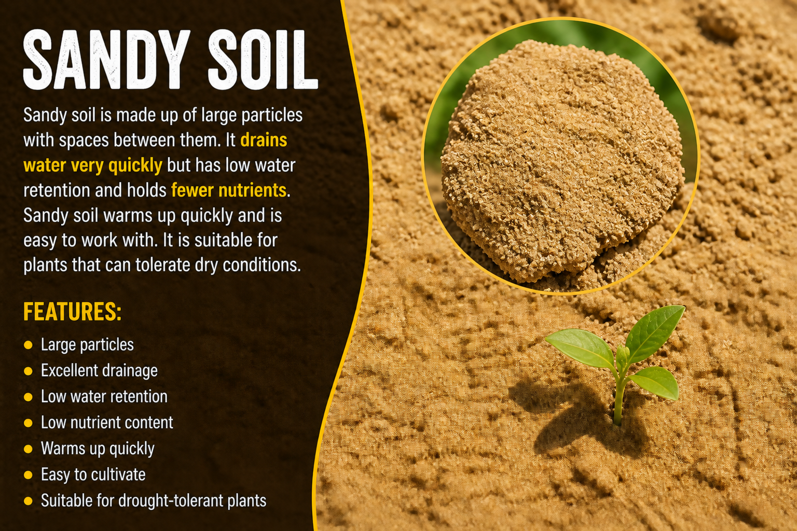
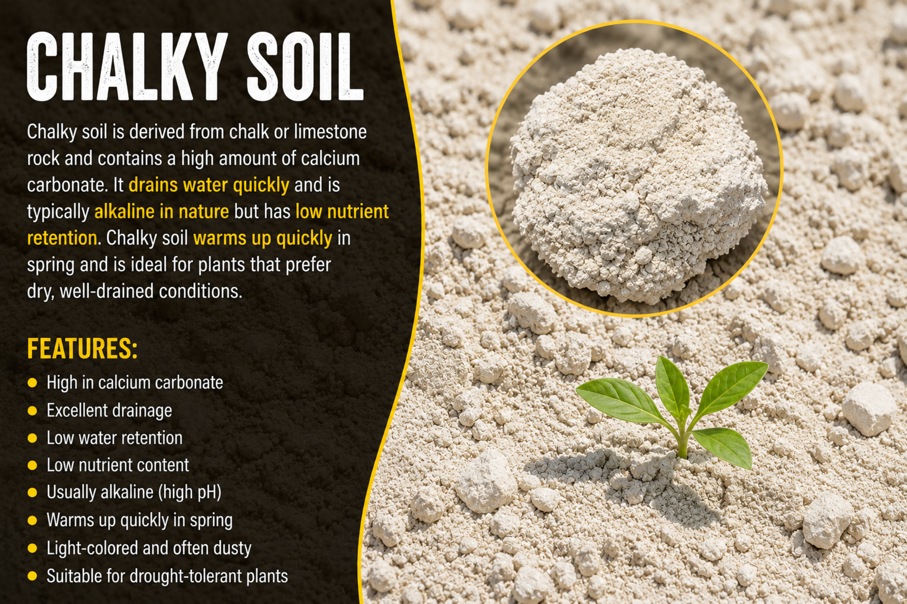
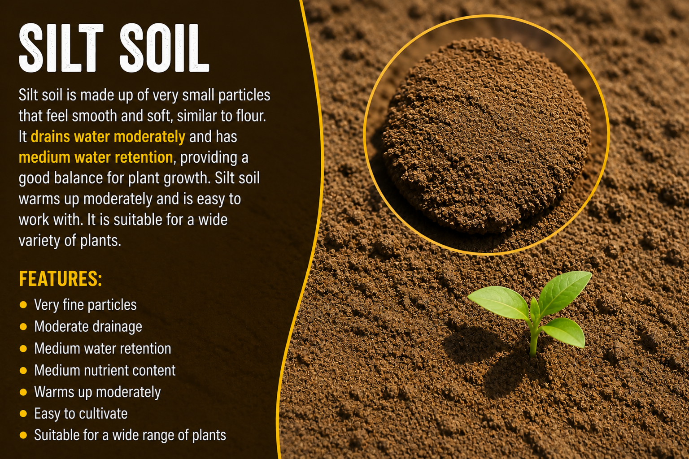
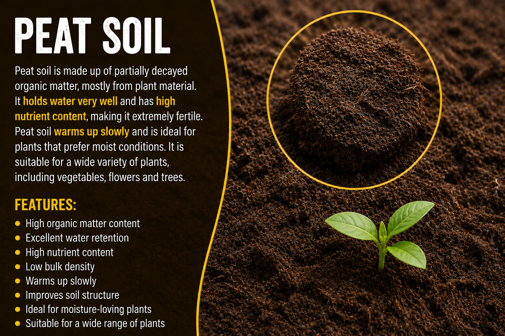
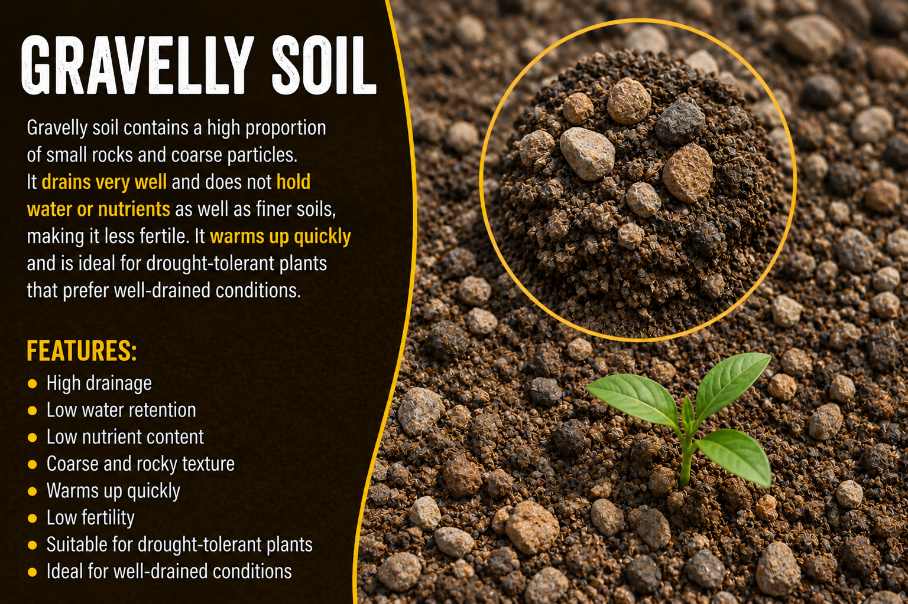

Types Of Soil In India


Loamy soil is made up of a balanced mixture of sand, silt, and clay. The different particle sizes create spaces in the soil that allow air, water, and plant roots to move freely. It retains moisture well without becoming waterlogged and is easy to cultivate. Loamy soil is rich in nutrients and organic matter, making it ideal for plant growth and high crop yields.It also has high calcium and pH levels, as well as hummus.


Clay soil has a dense and compact structure that retains water very well, making it suitable for moisture-loving plants. It is rich in nutrients, allowing many crops to grow successfully and produce good yields. However, clay soil is often alkaline, which can limit the availability of certain essential nutrients for plants. It also warms up slowly, making it less suitable for early planting in spring.One major drawback of clay soil is that it is difficult to work with, as it becomes sticky and waterlogged during wet conditions and hard and compact when dry.
Sandy soil has a light and loose structure that allows it to warm up quickly, making it ideal for early planting. The large particle size improves drainage and aeration, making the soil easy to work with and cultivate. However, this also means that water drains rapidly through the soil, carrying away essential nutrients. Sandy soil is often slightly acidic, resulting in a lower pH level. Due to poor water and nutrient retention, plants growing in sandy soil may require frequent watering and fertilization to support healthy growth.


Chalky soil has a stony and alkaline structure that drains water quickly and is suitable for plants that prefer dry conditions. It often contains large amounts of calcium carbonate, which can limit the availability of essential nutrients for plant growth. Chalky soil warms up fairly quickly, making it suitable for early planting in some cases. However, a major disadvantage of this soil type is that it dries out easily and can be low in fertility, requiring regular watering and nutrient management to support healthy plant development.
The main advantage of silt soil is that it has fine particles that retain moisture well, making it suitable for a wide variety of crops. It is more fertile than sandy soil due to its ability to hold nutrients effectively. Silt soil has a smooth and soft texture, which makes it easy to work with and ideal for cultivation. However, it can be prone to erosion because of its fine particles. For the same reason, water may not drain as quickly, sometimes leading to waterlogging. Additionally, silt soil can become compact over time, which may reduce air circulation and affect healthy root growth.


Peat soil has a dark and spongy structure that allows it to retain moisture very well, making it suitable for plants that require consistent water supply. It is rich in organic matter, which supports healthy plant growth. However, water can accumulate easily in peat soil, sometimes leading to poor drainage and waterlogging. Peat soil is usually acidic, which can affect nutrient availability for certain plants. Plants growing in this type of soil may therefore require pH adjustment and careful maintenance to ensure optimal growth.
Gravelly soil has a coarse and rocky structure that allows water to drain very quickly, making it suitable for plants that prefer dry conditions. It has large particles, which improve aeration and make the soil easy to work with. However, it does not retain moisture well, which can lead to dry conditions for plant roots. Gravelly soil is usually low in organic matter, which can affect plant growth. Plants growing in this type of soil may therefore require frequent watering and the addition of organic matter to improve productivity.
